Typical distribution of anime average scores by Type
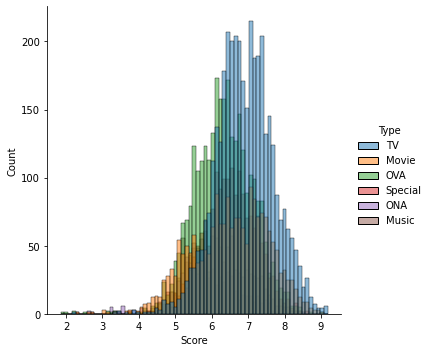
Typical distribution of TV type anime average scores
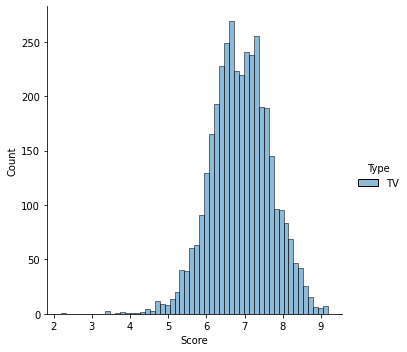
Typical distribution of Movie type anime average scores
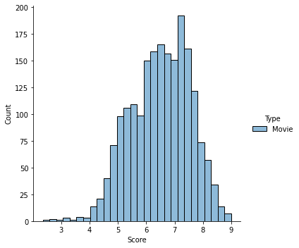
Typical distribution of Music type anime average scores
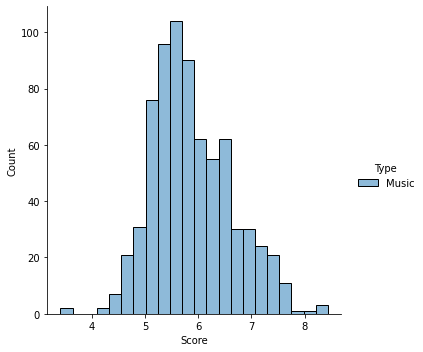
Typical distribution of ONA type anime average scores
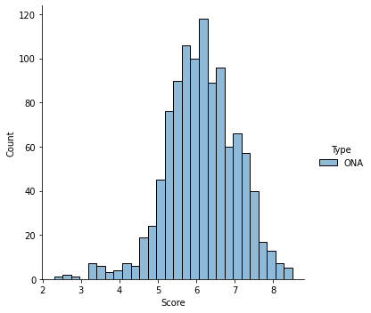
Typical distribution of OVA type anime average scores
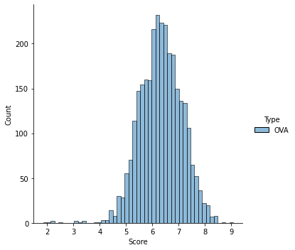
Typical distribution of Special type anime average scores
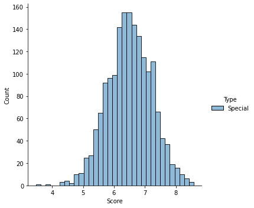
Typical density distribution of anime mean scores by Type
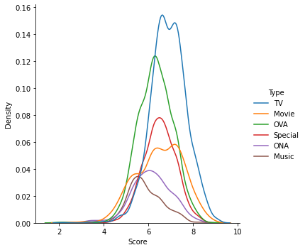
Typical density distribution of TV type anime average scores
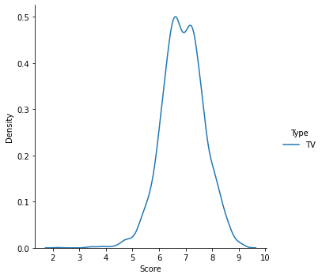
Typical density distribution of Movie type anime average scores
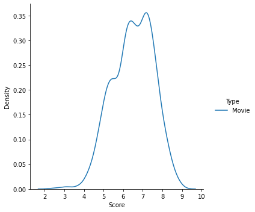
Typical density distribution of Music type anime average scores
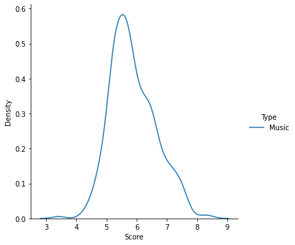
Typical density distribution of ONA type anime average scores

Typical density distribution of OVA type anime average scores
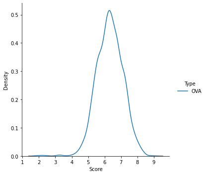
Typical density distribution of Special type anime average scores
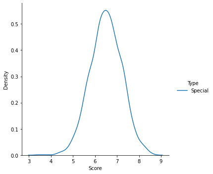